"Unidos transformamos la ciencia enfermera para el bienestar de nuestras comunidades y el futuro de nuestra región."
Integrando a líderes, científicos y profesionales del cuidado en Costa Rica, Centroamérica y el Caribe para fortalecer el liderazgo transformacional, la salud pública, la innovación y la dignificación gremial.
Integración Mesoamericana y Caribeña:
"Unidos por el conocimiento, comprometidos con la vida"
Evidencia clínica
Transformacional
Solidaridad regional
Bienestar integral
Cuidado ambiental
Transformación digital
La Asociación Regional Centroamericana y Caribe de Profesionales de la Ciencia Enfermería (ARCCPCE) nace formalmente el 19 de marzo de 2026 como una asociación civil sin fines de lucro radicada en San José, Costa Rica, con el propósito histórico de unificar y potenciar la práctica científica y el liderazgo del gremio de enfermería en toda el área mesoamericana y del Caribe.
América Latina promedia 44.3 enfermeros/10k hab., por debajo de la meta de 70.6 recomendada por la OPS para Cobertura Universal.
Déficit crítico agravado por la migración internacional: 1 de cada 7 enfermeros trabaja fuera de su país de origen.
Frente a un déficit global proyectado de 5.8 millones de profesionales, ARCCPCE surge para evitar la fuga de talentos, generar investigación propia y defender condiciones laborales y salariales dignas.
Respaldada por destacados catedráticos, juristas, investigadores y líderes de la salud pública, la asociación articula esfuerzos transfronterizos con organismos de integración como COMISCA, SICA, FEPPEN, la Organización Panamericana de la Salud (OPS) y el Consejo Internacional de Enfermeras (CIE).
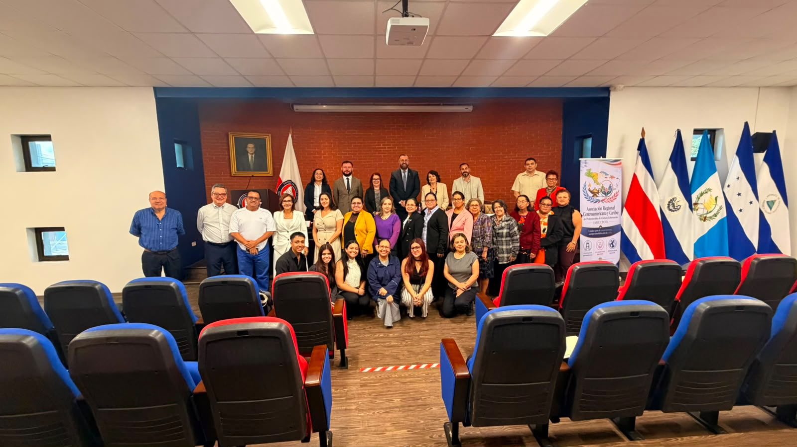
Acto Solemne de Instalación
Colegio de Abogados y Abogadas de Costa Rica • San José
Los principios directrices que orientan cada una de nuestras iniciativas científicas, académicas y gremiales.
Que la Asociación Regional Centroamericana y Caribe de Profesionales de la Ciencia Enfermería sea un referente regional en el impulso de acciones colaborativas científico-educativas, así como en el fortalecimiento de un liderazgo transformacional y una gobernanza sólida en las diversas áreas del quehacer de la Enfermería. Todo ello orientado a la promoción de la salud humana y ambiental, la prevención de enfermedades crónicas no transmisibles y la integración ética, equitativa y responsable de la transformación digital como motor de innovación, inclusión y fortalecimiento de las capacidades profesionales en la región.
Impulsar el desarrollo de la Enfermería en Centroamérica y el Caribe mediante la colaboración científica y educativa, el fortalecimiento del liderazgo y la gobernanza, y la promoción de la salud integral, la sostenibilidad ambiental, la prevención de enfermedades crónicas no transmisibles y la adopción ética de la transformación digital, contribuyendo al bienestar de las personas y comunidades de la región.
Unidad gremial y trabajo mancomunado entre países hermanos.
Capacidad propositiva en la toma de decisiones sanitarias.
Protección de la vida humana y del medio ambiente.
Justicia social, respeto profesional y trato igualitario.
Capacitación continua y adopción de tecnologías.
Compromisos concretos inscritos en nuestra acta fundacional, respaldados por la evidencia y recomendaciones de la OMS y el Consejo Internacional de Enfermeras.
Integrar acciones colaborativas con una diversidad de actores de enfermería tanto estratégicos como comprometidos con la profesión, su desarrollo en la gestión del cuidado de la salud, la prevención y promoción de la salud y el ambiente.
Abogar por políticas de salud inclusivas, promoviendo la participación activa de enfermeras y enfermeros en la toma de decisiones políticas y ministeriales de alto nivel, posicionando líderes de enfermería en espacios de gobernanza pública.
Estimular la participación de los profesionales de enfermería en procesos políticos, sociales y comunitarios, promoviendo el activismo sociopolítico como herramienta para el cambio social y la reducción de las brechas de cobertura en salud.
Extender puentes de colaboración con entidades gubernamentales en los espacios nacionales de la región centroamericana y Caribe por ejemplo con COMISCA, SICA, GPECAC, a nivel de Latinoamérica con la FEPPEN e internacionales con el CIE y la OPS/OMS.
Fomentar la cooperación y el trabajo conjunto entre asociaciones, facultades de medicina/enfermería y organismos de salud de la región, para el intercambio de experiencias, conocimientos y homologación de competencias avanzadas.
Abogar por la mejora sustantiva de las condiciones laborales, salariales y de seguridad para los profesionales de enfermería, promoviendo la dignificación de la profesión, frenando la migración forzada y reconociendo el impacto de la ciencia enfermera en la salud pública.
Impulsar la investigación abierta y basada en la evidencia y la innovación en la ciencia enfermera, promoviendo la difusión de conocimiento clínico que contribuya a la mejora directa de la salud en los niveles hospitalario y de Atención Primaria de Salud (APS).
Capacitar a enfermeras y enfermeros en liderazgo transformacional, gobernanza, telemedicina, salud digital ética, políticas públicas de salud y participación activa en organismos internacionales.
Momentos destacados de la constitución oficial de ARCCPCE en San José, Costa Rica. Haga clic en cualquier fotografía para ampliar.
Asamblea General Constitutiva
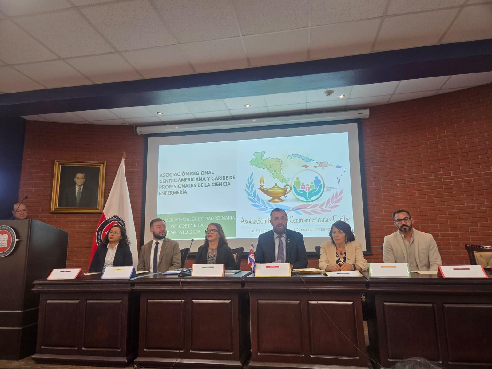
Mesa de Presidencia y Directiva
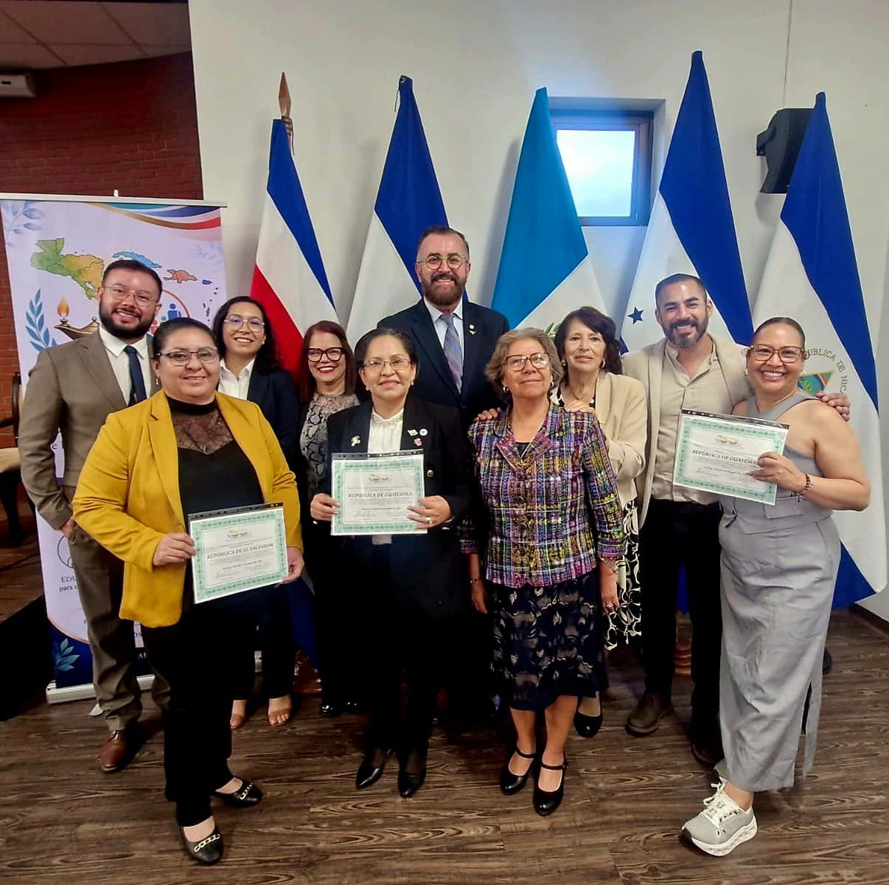
Acreditación de Delegaciones Regionales
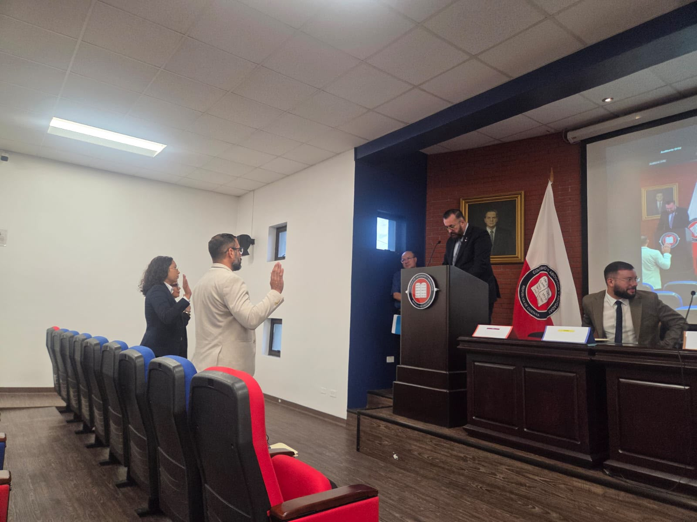
Juramentación de la Junta Directiva
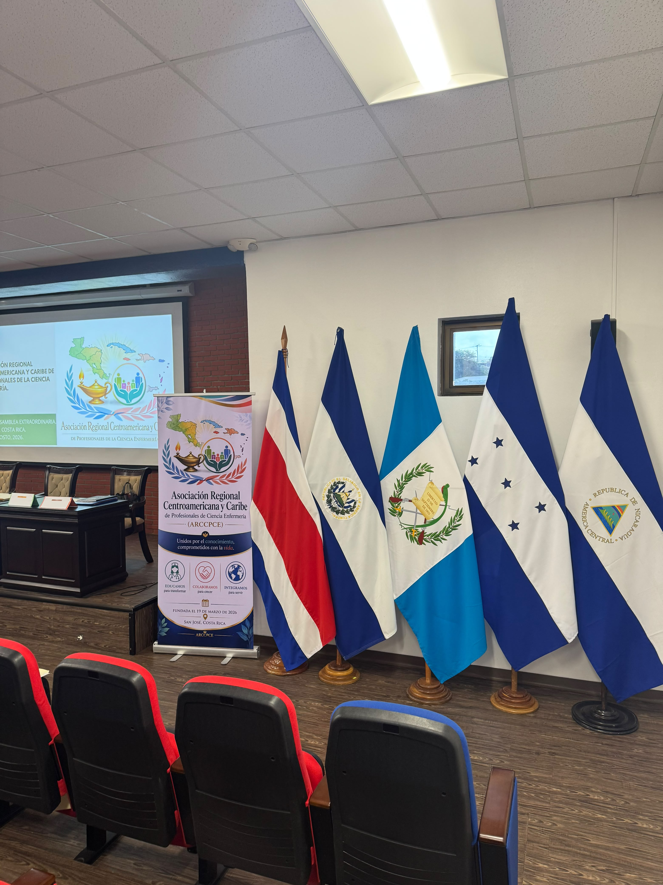
Estandarte y Banderas Centroamericanas
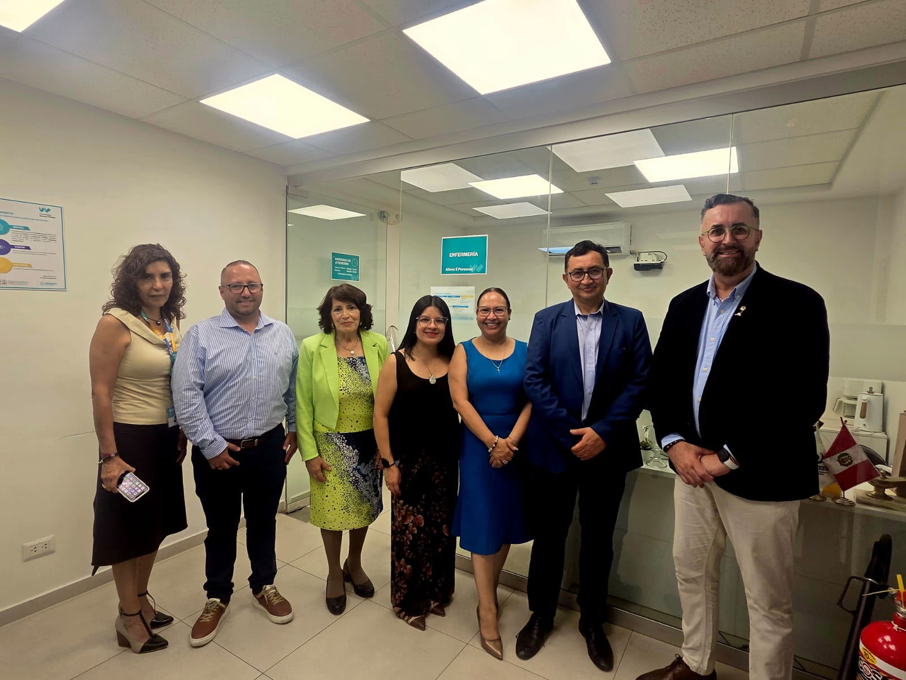
Sesión Técnica y Clínica
Espacios de articulación y organismos oficiales con los cuales ARCCPCE establece puentes de cooperación mutua para potenciar la ciencia enfermera, la gobernanza y las políticas de salud pública en Centroamérica y el Caribe.
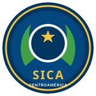
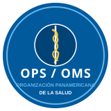
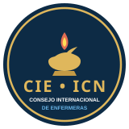
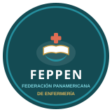
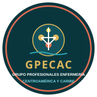
Si eres profesional de enfermería en Costa Rica, Centroamérica o el Caribe, o representas a una institución académica, de salud o investigación interesada en colaborar, ponte en contacto con nosotros.
San José, República de Costa Rica
Carta y Fines Oficiales:
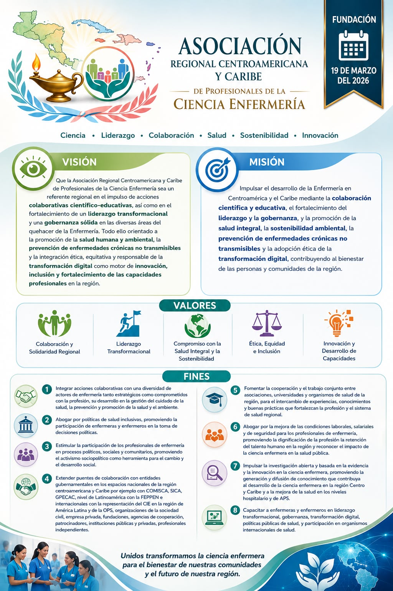
Complete sus datos para solicitar su incorporación a ARCCPCE o realizar una consulta oficial.